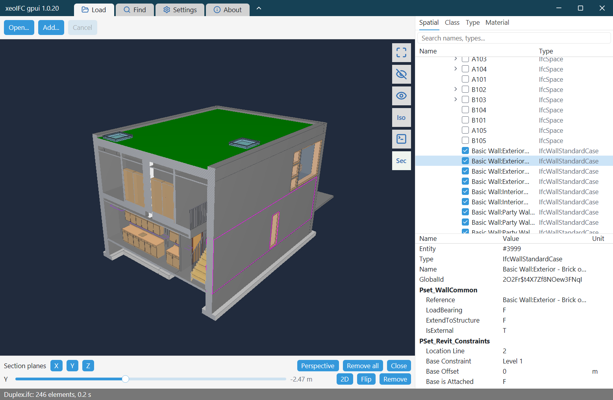

A Rust desktop IFC viewer on xeoifc.dll, with gpui
xeoIFC gpui is a desktop IFC viewer for Windows without Qt. It is about 1,900 lines of Rust with gpui, the UI framework of the Zed editor, and the gpui-component widgets, and its source code is open (MIT licence). Its window has the layout of the Qt viewer.
The IFC work is done by xeoifc.dll, the native library of xeoIFC, through the same plain C header that the
Qt viewer uses. There is no Rust crate of the library: the application declares the C
functions it calls. This page shows how a gpui window hosts the 3D view of the library, and the calls in Rust.
1. The application

- Open
.ifcand.ifczipfiles (IFC 2x3, IFC 4, IFC 4.3) and LandXML from the file dialog, by drag and drop or from the command line. Several files load into one scene, placed by their georeference. - Rotate about the point under the cursor, pan and zoom. Click an element to select it.
- Model tree by spatial structure, class, type and material, with a filter and a visibility box per row; attributes and property sets of the selected element.
- Find elements by entity id, GlobalId or a regular expression over names.
- Hide, isolate and show all.
- Section planes along X, Y and Z with a 2D view of the section.
The Qt viewer does more: IFC export (split and merge), sections along rail and road axes, the georeferencing inspector and reload of changed files. The library functions for these are the same.
2. Download
From the releases page:
xeoifc-gpui-windows-amd64.zip: the application ready to run. Unpack it and startxeoifc-gpui.exe.xeoifc-gpui-source.zip: the Cargo project with the source code (MIT licence),xeoifc.h,xeoifc.dllwith its import library for Windows x64, a README with the build steps, the licence texts and the notices of the open-source parts.
3. How a gpui window hosts the 3D view
On Windows gpui draws with its own Direct3D 11 renderer and cannot show a texture of another renderer. The library renders with wgpu into a native window that you give it. So the application creates a child window of the gpui window, gives it to the library, and keeps it on the bounds of a gpui element.
// gpui::Window implements raw_window_handle::HasWindowHandle: the HWND of the gpui window.
let parent = match HasWindowHandle::window_handle(window).map(|handle| handle.as_raw()) {
Ok(RawWindowHandle::Win32(handle)) => HWND(handle.hwnd.get() as *mut _),
_ => panic!("the gpui window has no HWND"),
};
let child = CreateWindowExW(WINDOW_EX_STYLE(0), w!("XeoIfcViewport"), None, WS_CHILD | WS_CLIPSIBLINGS,
0, 0, 1, 1, Some(parent), None, Some(instance.into()), None)?;
// The library draws into the child window with its own surface (sizes are physical pixels).
let viewer = xeoifc_viewer_create(child.0 as u64, null_mut(), width, height, &mut error);Three details make it work:
- Mouse input stays with gpui. The child window answers
WM_NCHITTESTwithHTTRANSPARENT, so Windows sends the mouse messages to the gpui window. The gpui element under the 3D view gets them like any other element and calls the camera functions of the library. - No DirectComposition.
mainsetsGPUI_DISABLE_DIRECT_COMPOSITION=truebefore gpui starts. With DirectComposition the gpui surface covers the child window. - Nothing over the 3D view. gpui cannot draw on top of a child window. The application has no popup, menu or tooltip that could reach into the view; its panels sit beside the view and push it. The tool buttons, which lie over the view in the Qt viewer, stand in a column beside it that has the colour of the view.
A gpui canvas element reports its bounds on every layout, and the child window follows:
canvas(
move |bounds, window, cx| {
let scale = window.scale_factor();
this.update(cx, |this, _| this.place(bounds, scale)); // SetWindowPos + xeoifc_viewer_resize
},
|_, _, _, _| {},
)// Left drag: rotate about the surface point under the cursor. Positions are physical pixels in the 3D view.
fn mouse_down(&mut self, event: &MouseDownEvent, _: &mut Window, _: &mut Context<Self>) {
let (x, y) = self.physical_u32(event.position);
viewer.anchor_pick(x, y); // xeoifc_viewer_anchor_pick
...
}
fn mouse_move(&mut self, event: &MouseMoveEvent, _: &mut Window, _: &mut Context<Self>) {
...
viewer.orbit(dx * Z_ROTATION_SPEED, dy * ROTATION_SPEED); // xeoifc_viewer_orbit
}The same pattern works for any renderer that takes a native window handle.
4. The library from Rust
The library has a plain C interface: functions, opaque handles, and UTF-8 JSON strings in and out.
src/ffi.rs declares the 57 functions that the application uses, and src/engine.rs wraps them in
three types that free what the library returns: Session, LoadJob and Viewer.
#[link(name = "xeoifc.dll", kind = "dylib")]
unsafe extern "C" {
pub fn xeoifc_session_new() -> *mut XeoIfcSession;
pub fn xeoifc_load_start(session: *mut XeoIfcSession, path: *const c_char, options_json: *const c_char,
callbacks: *const XeoIfcLoadCallbacks) -> *mut XeoIfcJob;
pub fn xeoifc_job_poll(session: *mut XeoIfcSession, job: *mut XeoIfcJob, status_json: *mut *mut c_char) -> c_int;
pub fn xeoifc_viewer_frame(viewer: *mut XeoIfcViewer) -> c_int;
...
}Load a file in the background
A load job reads and tessellates the file on its own thread inside the library. A gpui task polls it every 30 ms on the main thread and gives the result to the renderer.
cx.spawn(async move |this, cx| {
loop {
cx.background_executor().timer(Duration::from_millis(30)).await;
if this.update(cx, |this, cx| this.poll(cx)).is_err() { break; }
}
}).detach();
match self.session.poll(&job) { // xeoifc_job_poll: 0 running, 1 done, 2 failed, 3 cancelled
Poll::Running { phase, done, total } => { /* status line */ }
Poll::Done(status) => {
let pack = job.take_pack(); // the tessellated model
let scene = viewer.set_scene(&pack, add, placement.as_ref());
let tree = ModelTree::build(&status["tree"], &status["groupings"]);
...
}
...
}Find elements
The document API is one function, xeoifc_call: a JSON request in, a JSON response out.
let out = self.session.call("query.select", json!({ "text": "name ~ \"M_Fixed\"", "includeRefs": true, "limit": 100000 }), &doc_id);
// {"ok":true,"result":{"count":40,"refs":["#6426","#6497",..],..},..}
let found: Vec<ElementRef> = ...;
viewer.fit_elements(&found); // xeoifc_viewer_fit_elements
viewer.set_selection(&found); // xeoifc_viewer_set_selectionSection planes
// Four floats per plane: unit normal and -dot(point, normal); at most six planes.
viewer.set_clip_planes(&[0.0, 1.0, 0.0, -7.07]); // xeoifc_viewer_set_clip_planes
viewer.view_section(Some(&[x, y, z, 0.0, 1.0, 0.0])); // a 2D view straight at the sectionWhat the library can do, with load times: the Qt viewer page.
5. Build it yourself
You need 64-bit Windows 10 or 11, the Rust stable toolchain with the MSVC target, and the Visual Studio 2022 or 2026 Build
Tools with a Windows SDK. In release builds gpui compiles its shaders with fxc.exe of the Windows SDK, so
build from a Visual Studio developer prompt. In the unpacked xeoifc-gpui-source.zip:
cargo run --release -- model.ifcThe first build compiles gpui and about 400 other crates and takes several minutes. The build links
sdk\lib\windows-x64\xeoifc.dll.lib and copies xeoifc.dll next to the exe.
Cargo.toml pins gpui to an exact version: gpui has no stable release yet and its API changes between
versions.
Linux and macOS are not supported. gpui runs there, but the application has only the Windows child window; on Linux the library needs an X11 window, as in the Qt viewer.
6. Licence
xeoIFC gpui is open source under the MIT licence. You can use, change and distribute it, also in commercial products.
gpui, gpui-component and the other Rust crates in the executable have their own licences (Apache-2.0, MIT and similar);
THIRD-PARTY-NOTICES-gpui.txt in both zips lists them with their texts.
xeoifc.dll is not open source. It is licensed under the
xeoIFC Testing License (sdk/LICENSE.txt in the source zip): you
can use and redistribute it unmodified, in binary form and free of charge, solely for testing and evaluation. For
commercial or production use, contact xeoFoundry. All functions work without a
licence key. Without a key, each IFC file that the library writes gets one more element: an
IfcBuildingElementProxy with the text "xeoIFC evaluation version" next to the model. A licence key from
xeoFoundry removes it; enter it under Settings.